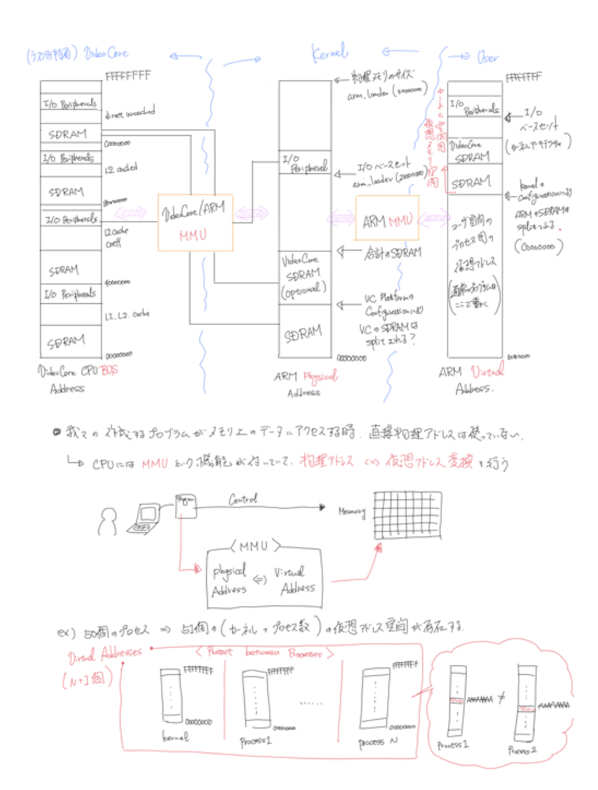
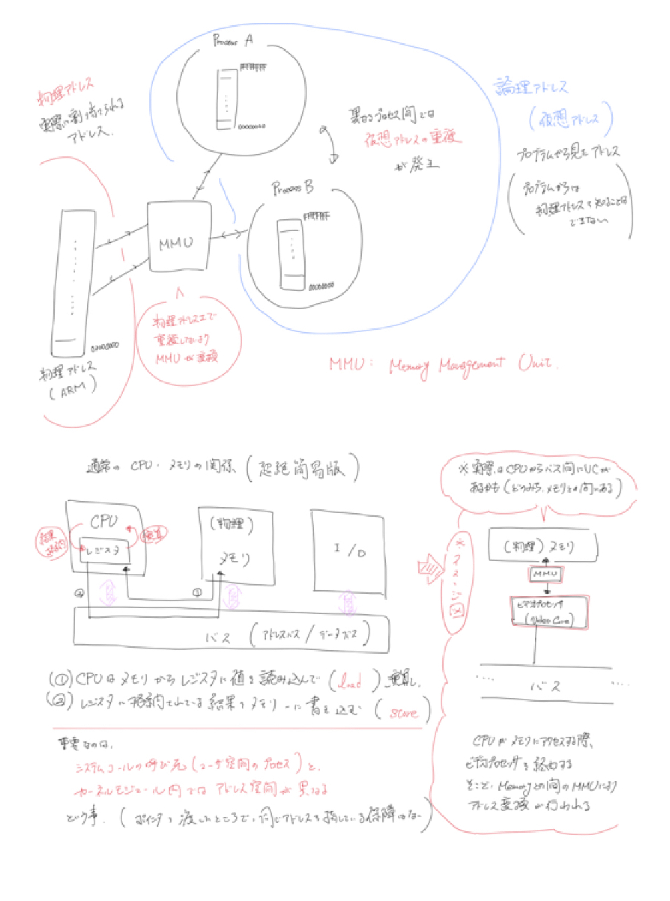
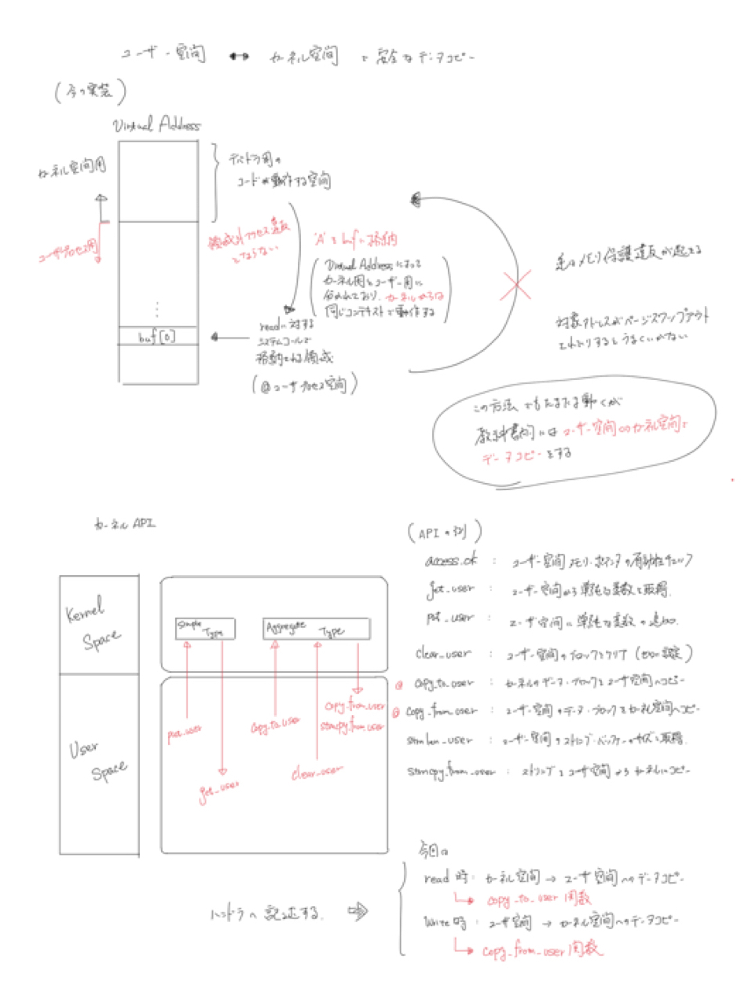

04. read/write and Memory¶
前回までで, 作成したデバドラをカーネルモジュールとしてカーネルに組み込む方法を見てきた. 今回はユーザープログラムから本デバドラとread/writeで値をやり取りしてみる.
参考URL
前提知識¶
メモリ空間に関して¶
警告
ここの話をしっかり理解するためにドキュメントを作ったと言っても過言ではないので, ここはかなりしっかりめに理解する.
上記URLの内容と下記画像の内容を照らし合わせて, 物理アドレス, 論理アドレス, 及び論理アドレスにおけるカーネル空間, ユーザ空間を理解する. また, カーネル空間とユーザー空間のメモリ値を操作するAPIが存在することを認識し, 通常これらのAPIを利用してお互いの空間上の値のやり取りをすることを理解する.
ドキュメントとするつもりだったが, おおよそ上記URLと下の画像で事足りた. しかし, 下の画像は解像度が低いため, 必要ならば, iPadの「メモ帳」アプリケーションの「hardware」フォルダに同様の画像があるため参照するとよい.
  ソースコード解説¶
カーネルAPIを利用して, ユーザ空間 - カーネル空間で安全なデータコピー¶
上で示した画像でも述べている通り, 特にread/writeシステムコールのハンドラをて実装する際に, ユーザ空間とカーネル空間でデータコピーを行うことが多い. この際に, copy_to_user と copy_from_user 関数を利用してデータコピーを行う. ここでは, write時に copy_from_user でユーザ空間からカーネル空間へデータをコピーし, read時に copy_to_user でその値をカーネル空間からユーザ空間へコピーする.
- copy_to_user, copy_from_user : uaccess.h
(どうも本来, asm/uaccess.h というヘッダに書かれているらしいが, 見つからなかった. linux/uaccess.h に移行した的な話も見たが真偽は不明. 少なくとも, linux/uaccess.h で実行は可能であり, 定義自体も確認できた.
さて, ユーザ空間 <-> カーネル空間のデータコピーはできるようになったが, これをstaticに保持していると, 異なるユーザが別々にopenしても同じ変数にアクセスしてしまうことになる. また, 別のデバイスを使用していても同じ変数にアクセスしてしまう.
これを避けるために, open時にデータ領域を確保して, 個別に管理できるようにしたいところである.
ここで, 少しopen時に登録するハンドラの引数に着目してみる. 引数に file 構造体が与えられている. この中には, private_data というメンバーがあり, 自由にポインタを保存しておくことができる. この file 構造体自体は, ユーザがファイルディスクリプタとして保存/管理する. メモリの確保には kmalloc を使用し, closeされるときは kfree で開放する. 今回, _mydevice_file_data という構造体をデータを保持する型とする.
open時のハンドラ内で kmalloc で _mydevice_file_data 分のメモリを確保し, 確保したポインタをユーザ側のfd (file 構造体の private_data メンバーに保持してもらう).
close時のハンドラ内で, kfree で file->private_data のメモリを開放する.
次に, read, write時の処理である. ユーザが read, write する時, openで取得したファイルディスクリプタを引数に設定する. つまり, デバイスドライバ側の実装では, 引数として渡されるその file 構造体の中の private_data メンバーを参照することで, open時に確保したデータ領域にアクセスできるため, あとは, copy_to_user, copy_from_user 関数の引数に, file->private_data の領域を与えてあげればいいだろう. これによって, open(ファイルディスクリプタ)毎に個別にデータを管理することができるようになる.
ユーザプログラムから呼び出す¶
行うこととしては, 作成されるデバイスファイルをopenし, それにwriteして, readして, closeするだけである. 確認事項としては, openしたそれぞれのデバイスファイルに違う値をwriteすると, それぞれの値がreadで正しく読み出せるかである. (上述のプログラムが想定どおりに動作しているかどうかの確認)
さて, 話が少しそれるが, カーネルの戻り値は通常, 0がOKで, read/write系は実際に理したバイト数になる(エラー時はマイナス値を返す)
ユーザプログラム側で errno.h をインクルードすることで, errno 変数にエラーコードが格納される. それを直接確認してもよいが, perror という関数を使うことでエラーコードをわかりやすい文章に変換してくれる. 今回はユーザープログラムにこれらを利用する.
open, close, read, write 関数の返り値とerrnoが同設定されるかを確認すると, 基本的に if文で関数呼び出し結果が0以下ならば何かしらエラーが発生し, errnoが設定されているため, perror を呼び出すというコードにすればよいだろう.